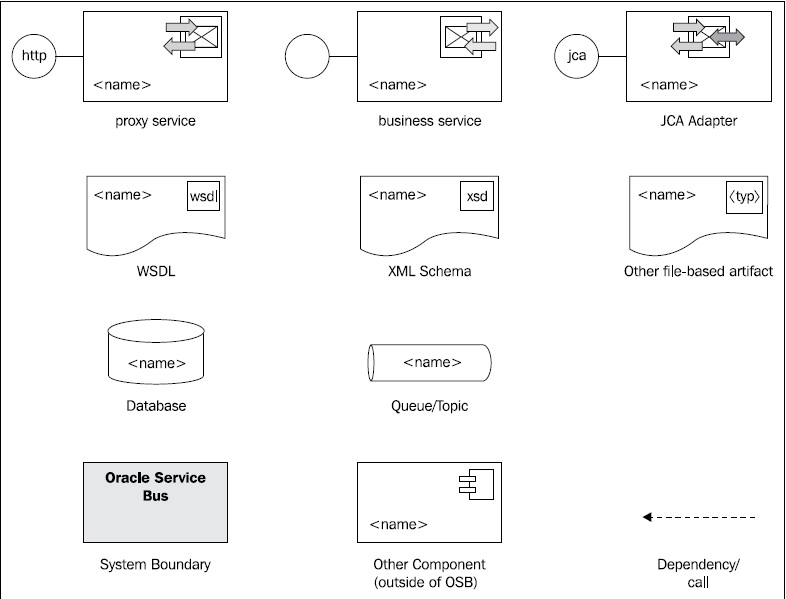

To keep the initial preparation of each recipe short, a lot of the recipes start from a base setup, which in most cases is an already existing OSB project including some initial artifacts and some base configuration. All the base setup artifacts are available in the chapter-<N>\getting-ready\<recipe-name> folder available in the ZIP file for this book. Each recipe refers to the corresponding folder in the Getting Ready section.
It will often be necessary to import an existing OSB project into Eclipse OEPE (for example, the OSB Plugin). The recipe Importing an already existing project into Eclipse OEPE in Chapter 1, Creating a Basic OSB Service, explains how to do that.
The solution of each recipe is available electronically in the folder chapter-<N>\solution\<recipe-name>, which is also part of the ZIP file for this book.
For most of the recipes we have created a simple, schematic diagram, representing the solution and the participating artifacts. The following image shows such a diagram taken from Chapter 1, Creating a Basic OSB Service.

The following diagram shows a legend with the different symbols and their meanings used throughout this book.

We strongly believe in the adage"a picture is worth a thousand words" and hope that these schematic diagrams will help the reader to quickly understand the setup of each recipe.